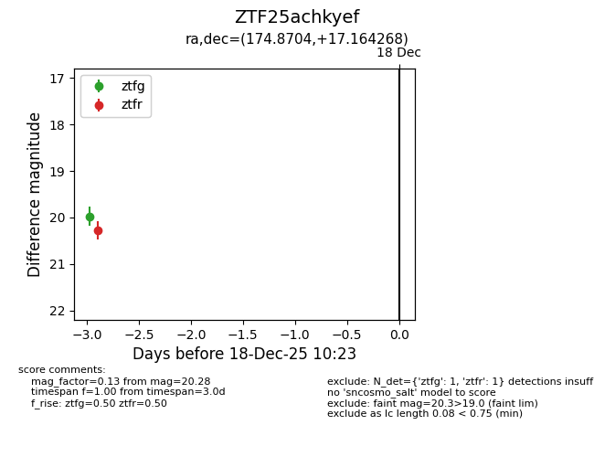
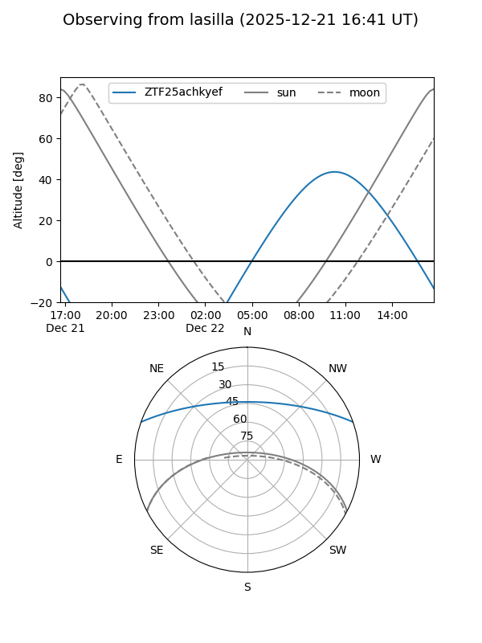
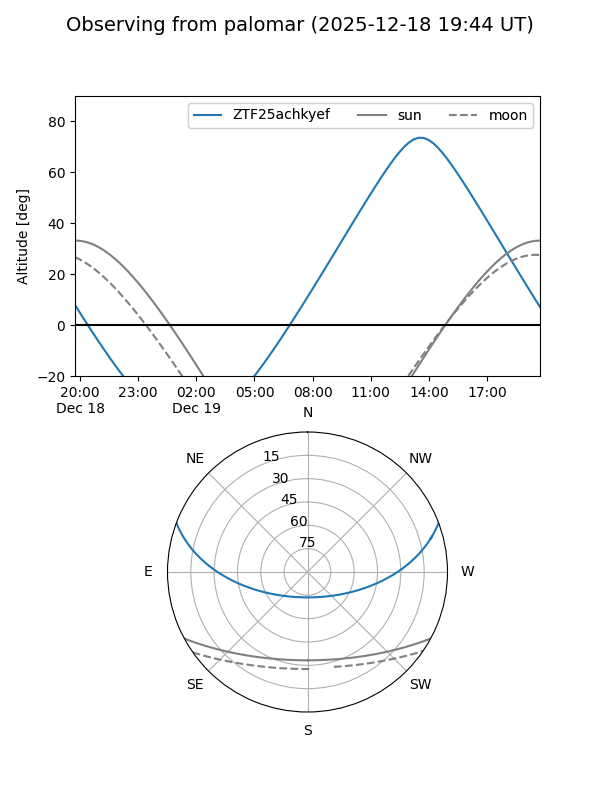

ZTF25achkyef
Target ZTF25achkyef at 2026-01-09 12:49
Aliases and brokers:
FINK: link
Lasair: link
ALeRCE: link
alt names
ZTF25achkyef (ztf,fink_ztf)
Coordinates:
equatorial (ra, dec) = 174.8704,+17.16427
equatorial (HMS+DMS) = 11:39:28.90,+17:09:51.37
galactic (l, b) = (240.1443,+70.62159)
Flags:
Photometry:
last ztfg=19.93, ztfr=20.32
2 ztfg, 3 ztfr detections
Lightcurve

Visibility


Additional plots